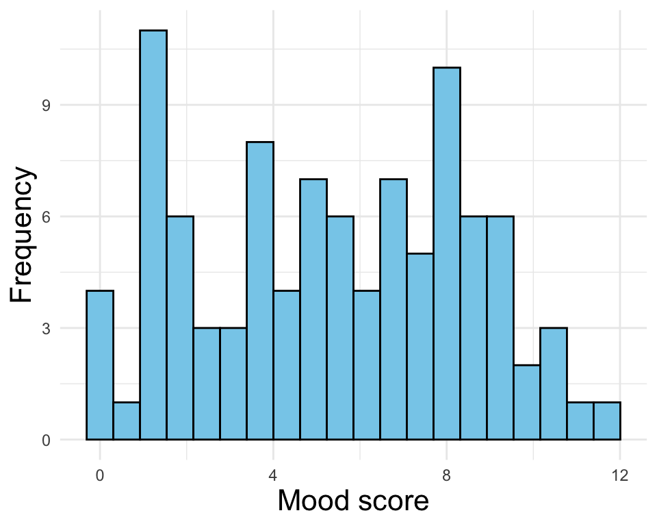
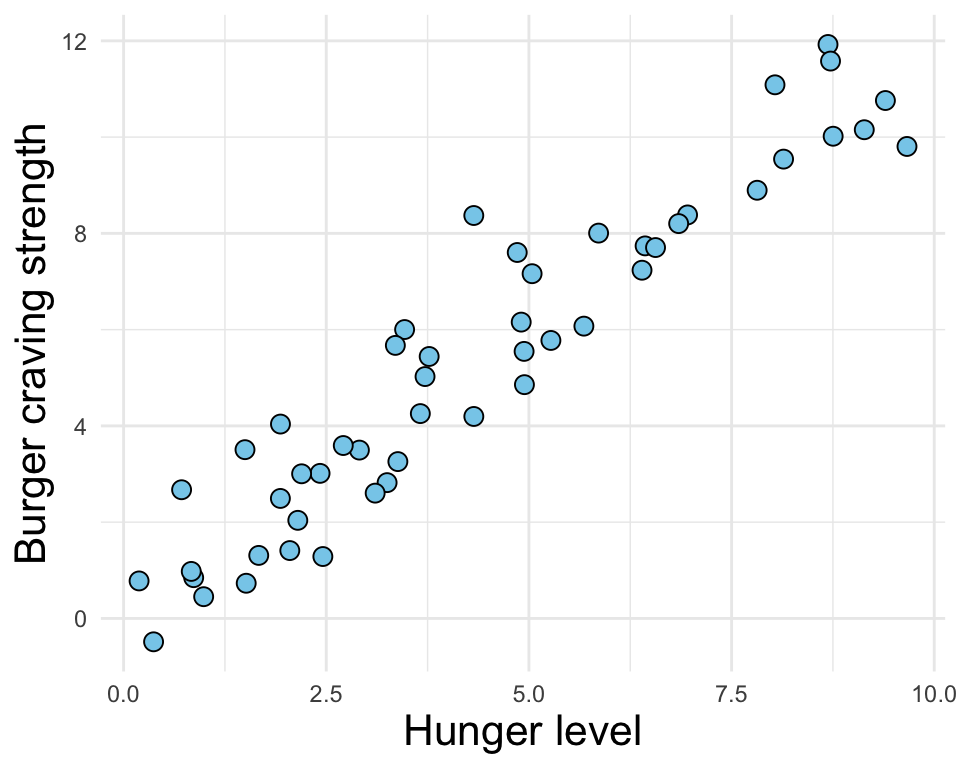
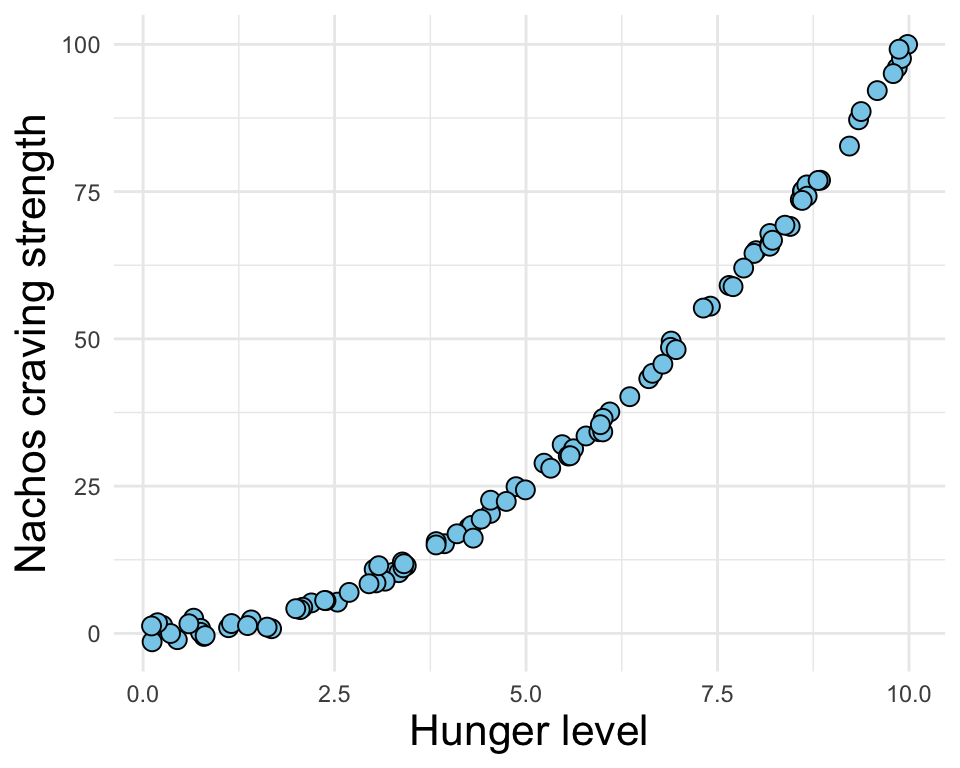

Originally published on GC Digital Initiatives
A few weeks ago my partner shared a TED Talk with me that changed how I conceptualize data communication. In it Dr. Wanda Diaz Merced, an astronomer who lost her eyesight in her early twenties, discusses her journey back into science after this setback. A crucial technique helped her interpret hefty astronomy data sets- sonification. Sonification turns data into sound. It is analogous to data visualization, where both methods aim to communicate patterns and relationships within data clearly and efficiently. Not only did sonification make data accessible for Dr. Merced, it helped her uncover patterns obscured by visualizing graphs and charts.
There are quite a few applications for sonification. The bing you get when an email lands in your inbox is one familiar example. The recognizable noise conveys a simple piece of information without requiring you to be sitting at the computer or staring at your phone. Representing large data sets gets a little more complicated.
Audio has multiple dimensions that can be exploited to represent information, including:
- pitch
- loudness
- duration
- spatial arrangement (e.g. stereo panning)
These can be combined to represent multiple data dimensions or used interchangeably to represent the same data in a new way. Best practices are still being formed and are often context-dependent on the user, but a great resource for the latest practices is the Floe Inclusive Learning Design Handbook.
A particular application that is relevant for folks who want to increase the accessibility of their publications is to sonify their existing data visualizations. Below are a few common examples. Each example is a visualization, followed by the sonification. I have chosen to represent values on the y-axis as changes in pitch, while time indicates change along the x-axis. To emphasize the change in time along the x-axis, I have added short white noise pulses for each data point along the x-axis. The listener is “reading” the plot from left to right.
A common data visualization technique for single variables is the histogram. These emphasize the distribution of the variable under consideration. Below, I’ve simulated data representing my mood 15 minutes before eating dinner over the last several weeks.

Notice how the pitch oscillates in a similar manner to the shape of the distribution and the pulses are evenly spaced, representing the bins of the distribution!
Now, let’s sonify two variables at once! The visualization below is a scatterplot, a common technique for two continuous variables. The data is simulated to represent how much I crave a burger depending on how hungry I am.

Notice how the pitch increase with time, but there are oscillations which represent error around a perfect linear relationship. Also notice how the pulses are less even- the points aren’t evenly distributed on the x-axis. Pretty cool!
The final visualization I’ll present is an exponential relationship between two variables. The simulated data in this scenario represents my craving for a big ol’ plate of nachos dependent on how hungry I am.

In this case, the pitch increases, well, exponentially! In addition, the points are tighter together- The pitch oscillates less than the linearly related data. My nacho cravings are pretty consistent.
These are just a few ways sonification can be incorporated into your data communication and exploration arsenal. Besides making data more accessible to those who are blind or low vision, sonification opens up another avenue of data exploration to uncover patterns not evident in a visßual medium. Dr. Merced was able to hear a distinct frequency pattern not evident from a chart that led her to discover that star formation likely plays an important part in supernova explosions! Sighted astronomers now use sonfication as a complement to visualization to investigate their data. If you would like to take a crack at sonification yourself, there are a variety of resources. The sonifications for this post were created using the R package sonify, which is a straightforward interface that will get you there quickly, without much overhead. You can find the R code for this blog post here.
Those of us at the Graduate Center Digital Initiatives strive to make interactions with digital media more accessible. We provide a variety of resources to take advantage of digital tools in your research. In addition, we provide community and support with the Digital Fellows, so I encourage you to take a look and connect with us!
Citation
@online{french2021,
author = {Connor French},
title = {Sonification for Data Communication},
date = {2021-04-19},
url = {https://delightful-alfajores-5cb3d1.netlify.app/posts/2021-04-19-sonification_ttt_post},
langid = {en}
}